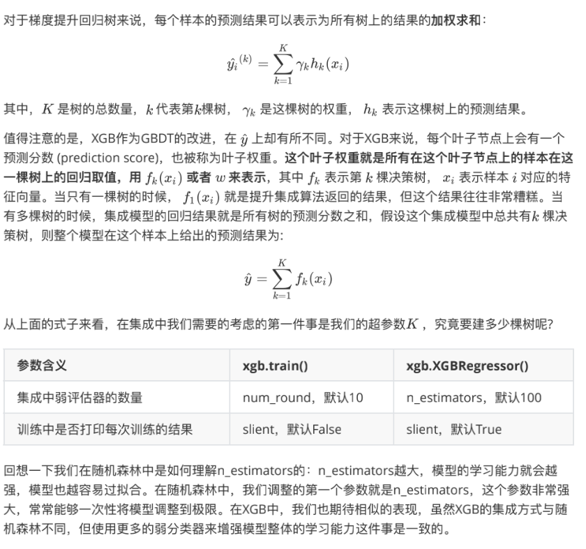
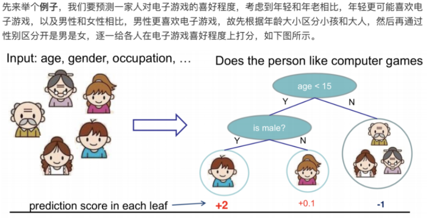
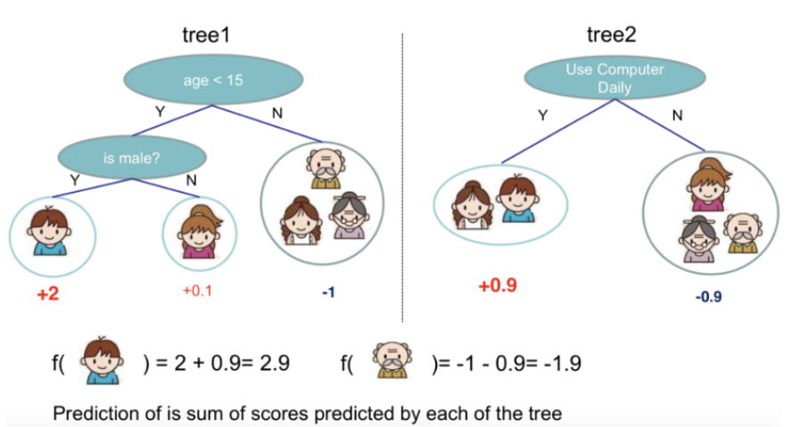
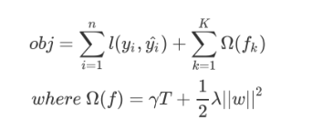
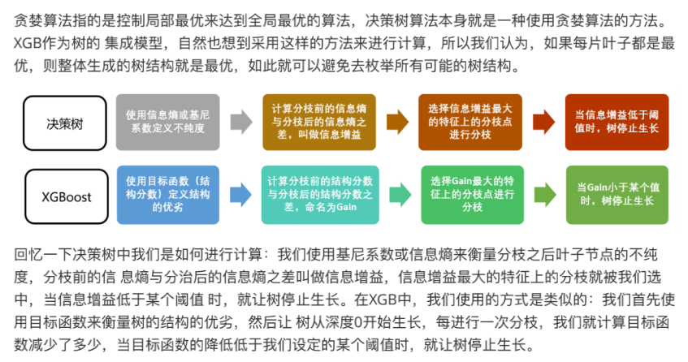
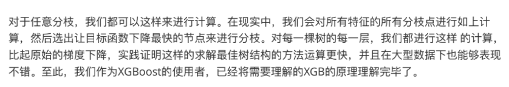
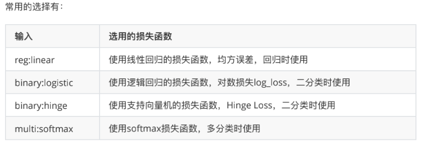
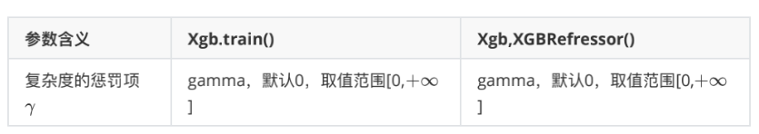

一、概述
XGBoost全称是 etreme gradient boosting，可译为极限梯度提升算法。它由陈天奇所涉及，致力于让提升树突破自身的计算极限，以实现运算快速、性能优秀的工程目标。和传统的梯度提升算法相比，XGBoost进行了许多改进，它能够比其他使用梯度提升的集成算法更加快速，并且已经被认为是在分类和回归上都拥有超高性能的先进评估器。
xgboost库
xgboost是一个独立的、开源的，专门提供梯度提升树以及XGBoost算法应用的算法库。和sklearn相似，有一个详细的官方网站可供查看，并且可以与 C，Python，R， Julia等语言连用，需要单独下载安装。
二、基本思想
XGBoost是Boosting算法中的一种。Boosting算法的思想是将许多弱分类器集成在一起形成一个强分类器。因为XGBoost是一种提升树模型，所以它是将许多树模型集成在一起。所用到的树模型是CART回归树模型。
1. CART回归树
CART回归树是假设树为二叉树，不断将特征进行分裂。实质上就是在该特征维度对样本空间进行划分。
目标：遍历所有特征的所有切分点，找到最优的切分特征和切分点。最终得到一颗回归树。
2. XGBoost算法思想
算法思想就是不断地不断进行特征分裂来添加树，每次添加一个树，其实是学习一个新函数，去拟合上次预测的残差。当我们训练完成得到k棵树，要预测一个样本的分数就根据这个样本的特征，在每棵树中会落到对应的一个叶子节点，每个叶子节点对应一个分数，最后只需要将每棵树对应的分数加起来就是该样本的预测值。


就这样，训练出了2棵树tree1和tree2，两棵树的结论累加起来便是最终的结论，所以小孩的预测分数就是两棵树中小孩所落到的结点的分数相加∶2+0.9=2.9。爷爷的预测分数同理:-1＋(-0.9) =-1.9。具体如下图所示:

三、XGBoost基本原理
1. 目标函数

- 损失函数，可以是平方损失或逻辑损失
- 正则项，加入正则项的好处是防止过拟合。一是预剪枝，：T代表叶子节点数，γ可以控制叶子节点的个数。二是leaf score的L2模平方系数对leaf score做了平滑：ω代表叶子节点的分数(leaf score)，λ可以控制leaf score不会过大。
所以，当生成t棵树后，总体目标就是一方面要最小化Loss 函数，一方面要让树模型更精简。由此衍生了一个结构分数，代表了当我们指定一个树的结构时，我们在目标上面最多减多少。类似Gini系数一样的对树结构打分的函数。
2. 寻找最佳分支：结构分数之差(Gain)

所以在XGB的运行过程中，会根据结构分数寻找最佳的树。

四、参数简要说明
1. 有放回的随机抽样：参数subsample
在梯度提升树中，每构建一个评估器，都让模型更加集中于数据集中那些容易被判错的样本，加大它们的权重。持续反馈。。。
2. 迭代决策树：参数eta
因为模型会更加倾向于攻克那些难以判断的样本，那么，如何构造更好的树？——
除了保证模型逐渐倾向于困难样本的方向，还必须控制新弱分类器的生成，然后让新添加的树是对这个新数据集预测效果最优的那一棵树。
eta是迭代决策树时的步长，又叫做学习率。和逻辑回归里的类型，步长越大，迭代速度越快，很快达到算法极限，有可能无法收敛到真正的最佳，步长越小，越有可能找到更精确的最佳值，但速度会比较慢。
3. 选择弱分类器：参数booster
booster可以选择使用什么样的弱评估器，树模型gbtree、线性模型gblinear，
每种评估器对应的params也不同，都有自己的params列表，评估器必须有param参数相匹配。
4. XGB的目标函数：参数objective
选择不同的损失函数取决于要解决什么问题 ——
回归预测：均方误差RMSE
分类预测：错误率error 或者 对数损失 log_loss
只要选出的函数可微，能够代表某种损失的函数，就可以。
损失函数的核心是衡量模型的泛化能力，即模型在未知数据上的预测的准确与否。XGB是实现了模型表现和运算速度的平衡的算法，因此引入了模型复杂度来衡量算法的运算效率，所以XGB的目标函数被写作：传统损失函数 + 模型复杂度

5. 参数化决策树：参数lambda
调节lambda越大，惩罚越重，正则项比例越大，可以让模型的复杂度变低，对于天生过拟合的XGB来说，可以一定程度上提升模型效果。可以使用网格搜索调整。
6. 让树停止生长：参数gamma
gamma可以控制叶子节点的个数，也叫“复杂性控制”，是防止过拟合的重要参数。如何让树停止生长——
在XGB中，我们规定，只要结构分数之差Gain是大于0的，即只要目标函数还能够继续减小，我们就允许树继续进行分支，可以直接通过设定gamma的大小来让XGB中树停止生长，所以gamma也叫：在树的叶子节点上进行进一步分支所需的最小目标函数减少量。gamma越大，算法就越保守，树的叶子数量就越少，模型的复杂度就越低。
